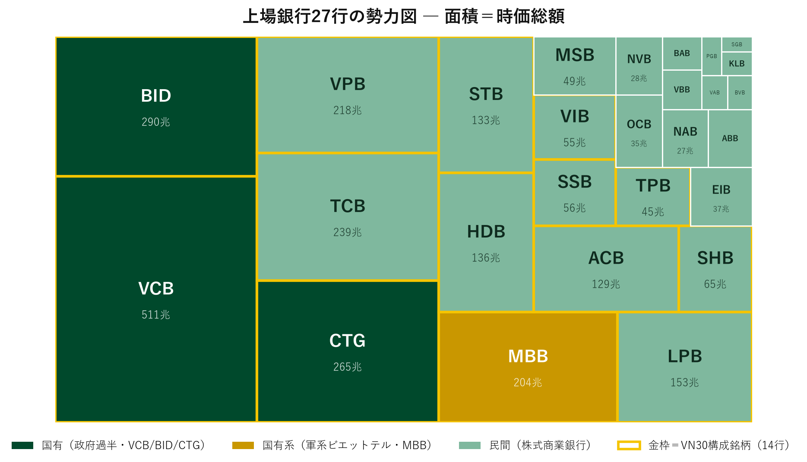

ベトナムの銀行地図は、二つの水域でできている。
ひとつは国有の壁。ベトコムバンク（VCB）・ベトナム投資開発銀行（BID）・ベトナム工商銀行（CTG）の国有Big3は、政府が過半を握る「国家の金庫番」だ。3行合計の時価総額は約1,066兆VND（約6.6兆円）——上場銀行全体の約4割を占め、時価総額の上位3行はすべて国有である。融資先も国家プロジェクトや大企業が中心で、金利・与信の政策がまずここを通る。なお4大国有銀行のもう1行アグリバンクは非上場だ。
もうひとつは民間の海。テクコムバンク（TCB）、VPバンク（VPB）、アジア商業銀行（ACB）、HDバンク（HDB）——株式商業銀行と呼ばれる23行が、リテール金融・中小企業・消費者ローンの成長市場を泳ぐ。規模では国有に及ばないが、収益性と成長でここが主戦場になる。PERを見ると民間主要行は6〜9倍に沈む一方、VCBは14倍——市場は「国有の安定」にプレミアムを、「民間の成長」にディスカウントを付けている。
この構図はVN-Indexの読み方を変える。銀行セクターが動く日、それが国有の政策期待なのか民間の業績期待なのかで、相場の意味はまったく違う。前号で見た「ビンか、銀行か」の綱引きの、銀行側の内部にはもう一段の綱引き——「国有か、民間か」——が隠れている。
| 銀行 | 区分 | 時価総額（円換算） | PER | PBR | 外国人枠 消化 |
|---|---|---|---|---|---|
| VCB／ベトコムバンク | 国有 | 約3.2兆円 | 14.2x | 2.19x | 67% |
| BID／ベトナム投資開発銀行 | 国有 | 約1.8兆円 | 9.4x | 1.57x | 59% |
| CTG／ベトナム工商銀行 | 国有 | 約1.6兆円 | 7.0x | 1.42x | 82% |
| TCB／テクコムバンク | 民間 | 約1.5兆円 | 9.2x | 1.39x | 96% |
| VPB／VPバンク | 民間 | 約1.3兆円 | 8.3x | 1.28x | 80% |
| MBB／MBバンク | 国有系 | 約1.3兆円 | 7.4x | 1.42x | 95% |
| LPB／LPバンク | 民間 | 約9,500億円 | 13.7x | 3.78x ※ | 22% |
| HDB／HDバンク | 民間 | 約8,400億円 | 8.0x | 1.69x | 79% |
| STB／サコムバンク | 民間 | 約8,300億円 | 28.8x ※ | 2.17x | 38% |
| ACB／アジア商業銀行 | 民間 | 約8,000億円 | 7.9x | 1.30x | 82% |